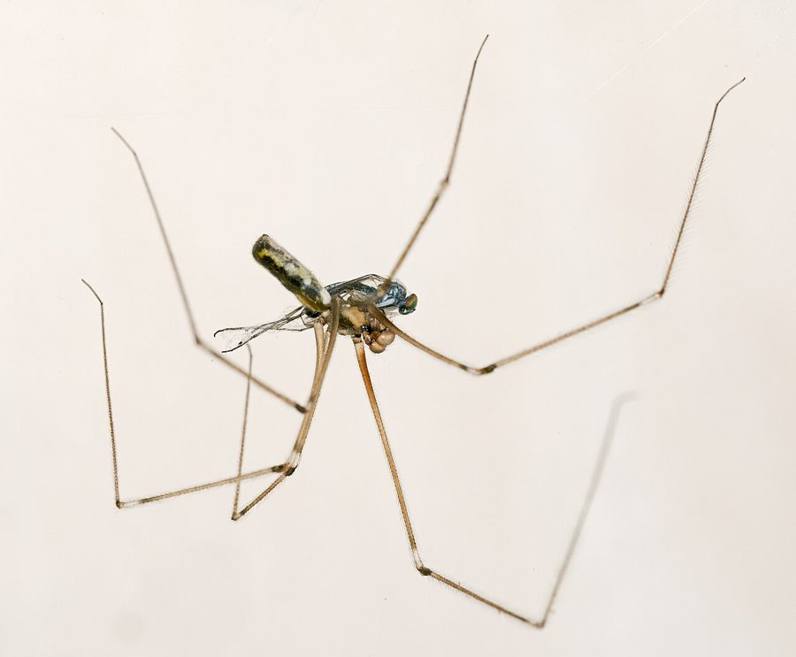

पतली टांग वाली मकड़ीLong-bodied Cellar Spider
Pholcus phalangioides · Pholcidae · SPD-0010

- Scientific name
- Pholcus phalangioides (Fuesslin, 1775)
- Family
- Pholcidae
- Hindi
- पतली टांग वाली मकड़ी
- Status here
- native
- IUCN
- not evaluated
When to look कब देखें
Present all year.
पतली टांग वाली मकड़ी / Long-bodied Cellar Spider
Pholcus phalangioides (Fuesslin, 1775) — Pholcidae
पतली टांग वाली मकड़ी (लॉन्ग-बॉडीड सेलर स्पाइडर) — घरों के कोनों, छतों और अंधेरे कमरों में पाई जाने वाली एक अत्यंत सामान्य मकड़ी है। इसके शरीर का आकार छोटा और बेलनाकार होता है, लेकिन इसकी टांगें शरीर से 5 से 6 गुना लंबी और धागे जैसी पतली होती हैं। यह दीवारों के कोनों में एक ढीला-ढाला, त्रि-आयामी जाला (cobweb) बुनती है। जब इस मकड़ी को कोई छूता है या जाले को हिलाता है, तो यह अपने जाले के केंद्र में खड़े होकर अपने शरीर को बहुत तेजी से गोल-गोल घुमाती है (vibration display), जिससे यह इतनी धुंधली हो जाती है कि दिखाई नहीं देती। यह एक शांत और इंसानों के लिए पूरी तरह से हानिरहित मकड़ी है, जो घरों के मच्छरों और हानिकारक कीड़ों को खाती है। इसके बारे में फैला यह भ्रम कि यह दुनिया की सबसे जहरीली मकड़ी है, वैज्ञानिक रूप से पूरी तरह गलत है।
Quick Identification त्वरित पहचान
| Feature | Description |
|---|---|
| Form | Small, elongated, cylinder-shaped body; legs are extremely long, thin, and hairless |
| Legs | Leg span reaches 5.0–7.0 cm; pale translucent brown, with dark joints |
| Colour | Pale grey, light brown, or yellow-grey body; cephalothorax has a dark, skull-like patch |
| Web | Large, messy, irregular three-dimensional cobweb built in corners of walls and ceilings |
| Eyes | Eight small eyes; six arranged in two prominent lateral triads (groups of three) and two tiny eyes at the front |
| Defence | Rapidly vibrates or whirls its body when disturbed, turning into a visual blur to escape predators |
Field tip: Look at the ceiling corners of your rooms or behind old storage boxes. If you see a tiny-bodied spider with extremely long, thread-like legs hanging upside down in an irregular web, it is a Cellar Spider. Tap the web gently — it will begin to swing and spin rapidly.
Morphology आकारिकी
Biometrics (typical measurements for adult specimens in home environments of Basti):
| Measurement | Range |
|---|---|
| Body length (female) | 7.0–9.0 mm |
| Body length (male) | 6.0–8.0 mm |
| Leg span | 50–70 mm |
Cephalothorax: Small, rounded, and carries a distinct, greyish-brown mark on the dorsal surface, which often resembles a human skull or mask. The eyes are grouped: two clusters of three eyes on the sides and two small eyes in the middle.
Abdomen: Cylindrical, elongated, and soft. It is pale grey or light tan, showing some faint darker markings on the dorsal side.
Legs: Extremely long and slender. The legs are pale brown and semi-translucent. The leg joints are noticeably darker. The legs carry sensory hairs (trichobothria) that detect air currents and vibrations.
Behaviour & Ecology व्यवहार और पारिस्थितिकी
Cobweb hunter and vibrating dancer.
- Web structure: Spins a loose, three-dimensional, non-sticky cobweb. The web is designed to tangle the legs of insects that walk or fly into it. The spider hangs upside-down in the center of the web.
- Whirling defense: When a predator approaches or the web is shaken, the spider performs a rapid whirling or vibrating display. It shakes its body in a circle at a high frequency, making it look like a blur. This behavior confuses predators (like geckos or wasps) and makes the spider difficult to target.
- Prey capture: If a fly gets tangled, the spider wraps it in silk using its long hind legs from a safe distance before biting it.
Ecological Role पारिस्थितिक भूमिका
Household insect regulator. The Long-bodied Cellar Spider is a valuable generalist predator in domestic environments. It feeds on household flies, mosquitoes ([INS-0035 Southern House Mosquito]), silverfish, and moths. It is also an active predator of other household spiders, including redback spiders and larger huntsman spiders, keeping their numbers in check.
Life Cycle / Phenology जीवन चक्र
- Active season: Active indoors year-round. Breeding peaks during the humid monsoon season.
- Reproduction: The male approaches the female cautiously, vibrating his body on the web to show his identity.
- Egg carrying: The female does not spin an egg cocoon. Instead, she carries the clutch of 20 to 30 round, translucent pink eggs directly in her jaws (chelicerae), held together by a few loose silk threads. She carries them constantly for 2–3 weeks, during which she cannot feed.
- Hatching: After hatching, the tiny spiderlings remain in the female's web for a few days, undergoing their first moult before dispersing.
Host Plants or Prey आहार
Carnivorous diet (household pests):
- Insects: Mosquitoes (
[INS-0035 Southern House Mosquito]), house flies, gnats, moths, and silverfish. - Spiders: Huntsman spiders, jumping spiders, and smaller web-builders.
Predators / Natural Enemies शत्रु
- Lizards: The Common House Gecko (
[REP-0003 House Gecko]) is its primary predator in ceiling corners. - Insectivorous birds: Tailorbirds (
[BRD-0015]) hunt them on open windows and verandas. - Parasitic wasps: Small wasps target their exposed egg masses.
Agricultural / Human Relevance कृषि प्रासंगिकता
Harmless pest controller — Debunking the toxicity myth.
- The Toxic Myth: There is a persistent global urban legend that the Cellar Spider is the "most venomous spider in the world," but its jaws are too short to bite humans. This myth is completely false. While its chelicerae can pierce human skin under lab conditions, its venom is weak and has no dangerous toxic effect on mammals. It causes only a mild, brief stinging sensation, less painful than a mosquito bite.
- Household benefits: It is a valuable helper in homes. It hunts mosquitoes and other spiders, providing free household pest control. Residents should protect them rather than sweep their webs away.
Expected Locally स्थानीय रूप से अपेक्षित
Not a field record. Written from published accounts for eastern Uttar Pradesh. No confirmed local sighting yet — if you have seen it, that is what the atlas needs.
अभी तक स्थानीय पुष्टि नहीं। यह विवरण प्रकाशित स्रोतों से है, किसी अवलोकन से नहीं।
Very common in Basti district, found in almost every home, cow shed (gaushaala), and grain storage room. They are usually found in dark corners of ceilings, inside store cupboards, and behind large wooden furniture. Sighted active year-round.
Distribution वितरण
Global range: Cosmopolitan species. Native to Europe, but has been introduced globally via human travel and trade, and is now established in houses worldwide.
In India: Widespread in all states, strictly synanthropic (living near humans).
In Uttar Pradesh: Abundant in all plain districts.
In Basti district / eastern UP: Highly common indoor resident in all blocks.
Research Questions शोध प्रश्न
- Does the presence of Pholcus phalangioides in a room significantly reduce the density of resting Culex mosquitoes compared to empty rooms? / क्या कमरों के कोनों में इस मकड़ी की उपस्थिति से मच्छरों की संख्या में कमी आती है?
- How does the frequency of the whirling defense display change based on the type of threat (wasp vibration vs. mechanical touch)? / खतरे के प्रकार (ततैया की कंपन बनाम सामान्य स्पर्श) के आधार पर इस मकड़ी की थरथराहट (whirling display) की आवृत्ति में क्या अंतर आता है?
- What is the survival rate of the eggs carried by female Pholcus phalangioides in humid monsoon conditions compared to dry summer months?
- Does Pholcus phalangioides show a feeding preference for other spider species over household flies in local storerooms?
- Can children measure the length of a cellar spider's leg and body to calculate the exact leg-to-body length ratio? — A simple, engaging anatomy activity.
Similar Species मिलती-जुलती प्रजातियाँ
| Species | Key Difference |
|---|---|
| Crossopriza lyoni (Tailed Cellar Spider) | Abdomen is shorter, high, and tapers to a tail-like point; body is more greyish with white spots; common in houses. |
Plexippus paykulli (Pantropical Jumping Spider [SPD-0003]) | Compact, box-shaped body; legs are short and robust; hunts visually on walls without webs; lacks the thread-like legs. |
| Harvestmen (Opiliones / Daddy Longlegs) | Not a spider; cephalothorax and abdomen are fused into a single oval body (no narrow waist); has only two eyes; does not spin webs. |
Taxonomy & Classification वर्गीकरण
Original description. Johann Caspar Fuesslin described the Cellar Spider as Aranea phalangioides in 1775 in Verzeichniss der ihm bekannten Schweizerischen Inseckten (p. 61). The type locality was Switzerland. It was later moved to the genus Pholcus Walckenaer, 1805. The authority is written in parentheses as (Fuesslin, 1775). The specific name phalangioides is derived from the Greek phalangion (spider) and eidos (resembling), referring to its spider-like legs.
Subspecies. Monotypic — no subspecies are currently recognised.
Family and order placement. Placed in the order Araneae, suborder Araneomorphae, family Pholcidae. Pholcidae contains all cellar spiders.
Phylogenetic notes. Pholcus phalangioides is the type species of the genus Pholcus. The family Pholcidae represents an early-diverged group of araneomorph spiders, characterised by their unique eye grouping and specialized sheet-web hunting behaviour.
IUCN status rationale. Not assessed (NE) by the IUCN Red List. It is a highly successful synanthropic species with stable global populations, facing no conservation threats.
Photo Gallery फोटो गैलरी
References संदर्भ
- Fuesslin, J. C. (1775). Verzeichniss der ihm bekannten Schweizerischen Inseckten. Zürich, Winterthur, p. 61. [original description]
- Pocock, R. I. (1900). The Fauna of British India, including Ceylon and Burma. Arachnida. Taylor & Francis, London.
- Tikader, B. K. (1987). Handbook of Indian Spiders. Zoological Survey of India, Calcutta.
- Japyassú, H. F. & Macagnan, C. R. (2004). Web and prey manipulation in Pholcus phalangioides (Fuesslin, 1775) (Araneae; Pholcidae). Behavioural Processes, 66(2), 131–143.
- Zoological Survey of India. State Fauna Series: Fauna of Uttar Pradesh — Araneae. ZSI, Kolkata.
- GBIF Occurrence Data — Pholcus phalangioides (2026). GBIF taxon key: 2149937.
Source file: species/fauna/spiders/cellar_spider.md